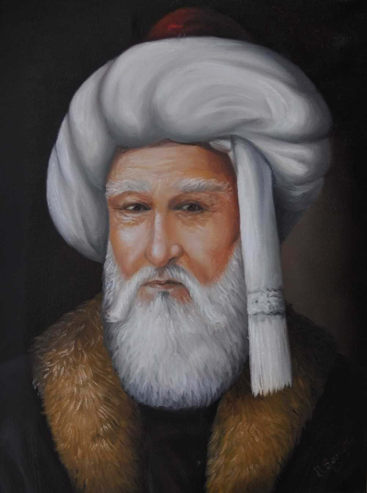

Şeyh Edebali, Osmanlı Devleti'nin kuruluş döneminde yaşamış önemli bir İslam alimi ve düşünürdür. Osman Gazi'nin kayınpederidir ve Osmanlı'nın kuruluş felsefesine yön vermiştir.
Osman Gazi’ye verdiği öğütlerle devletin temel değerlerinin oluşmasına katkı sağlamıştır. Osmanlı’nın manevi kurucusu olarak kabul edilir.
Türbesi Bilecik’te yer almakta olup her yıl birçok ziyaretçi tarafından ziyaret edilmektedir.
"İnsanı yaşat ki devlet yaşasın."